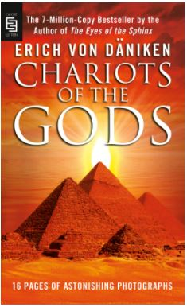

O Senhor dos Anéis (The Lord of the Rings, no original) é um livro de alta fantasia, escrito pelo escritor britânico J. R. R. Tolkien. Escrita entre 1937 e 1949, com muitas partes criadas durante a Segunda Guerra Mundial,a saga é uma continuação de O Hobbit (1937). Embora Tolkien tenha planejado realizá-la em volume único, a obra foi originalmente publicada em três volumes (The Fellowship of the Ring, The Two Towers e The Return of the King) entre 1954 e 1955, com cada volume contendo dois livros cada, e foi assim, em três volumes, que se tornou popular. Desde então, a obra foi reimpressa várias vezes e traduzida para mais de 40 línguas, vendendo mais 160 milhões de cópias,tornando-se um dos trabalhos mais populares da literatura do século XX.
